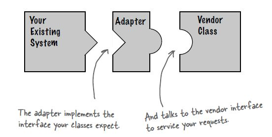
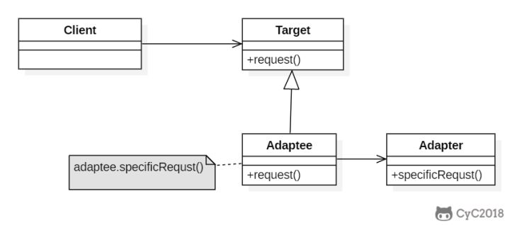
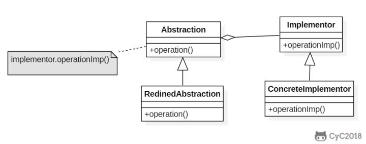
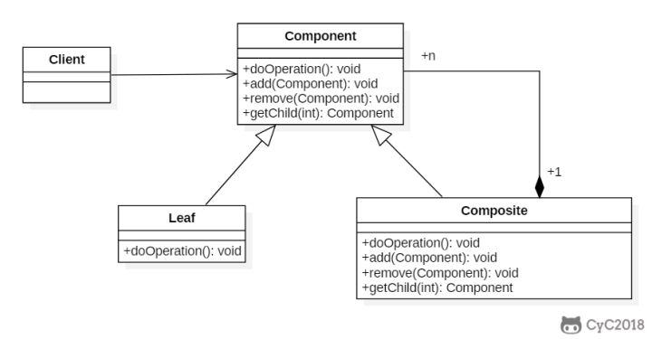
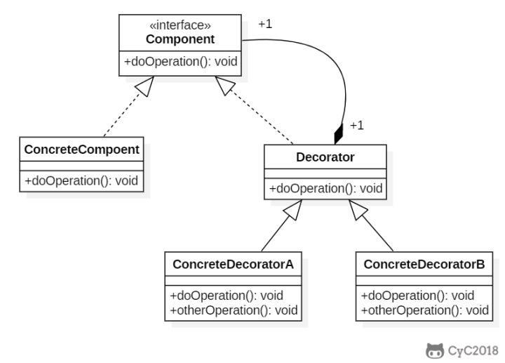
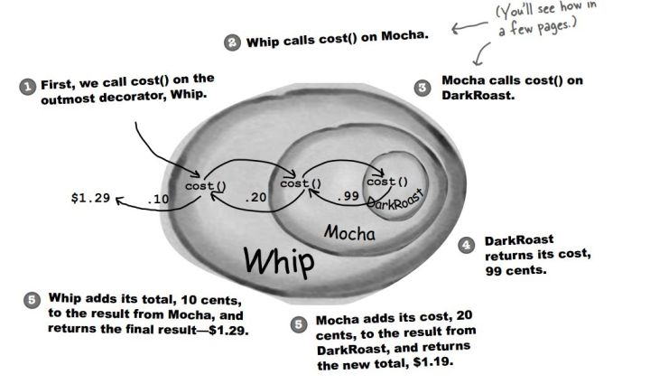
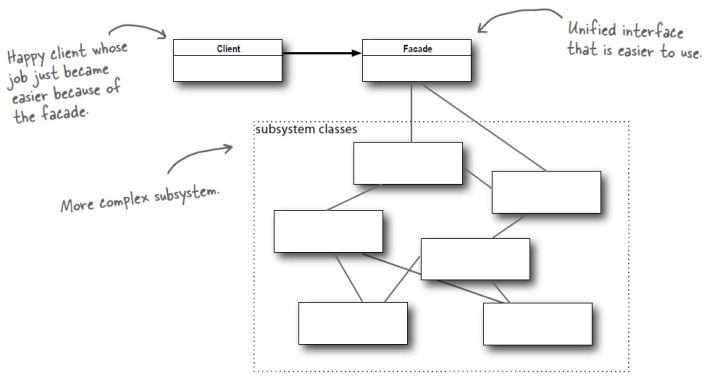
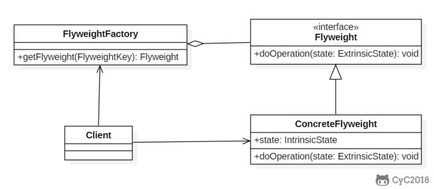
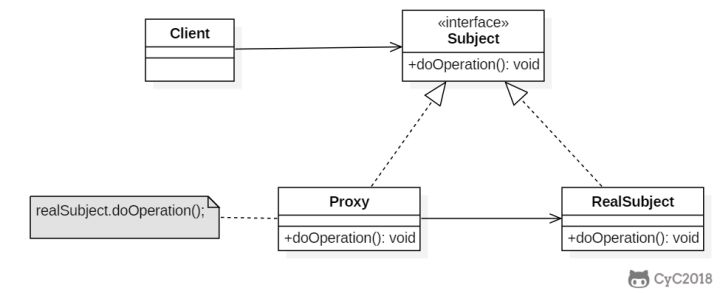

本人免费整理了Java高级资料，涵盖了Java、Redis、MongoDB、MySQL、Zookeeper、Spring Cloud、Dubbo高并发分布式等教程，一共30G，需要自己领取。
传送门：https://mp.weixin.qq.com/s/JzddfH-7yNudmkjT0IRL8Q
把一个类接口转换成另一个用户需要的接口。


鸭子（Duck）和火鸡（Turkey）拥有不同的叫声，Duck 的叫声调用 quack() 方法，而 Turkey 调用 gobble() 方法。
要求将 Turkey 的 gobble() 方法适配成 Duck 的 quack() 方法，从而让火鸡冒充鸭子！
public interface Duck {
void quack();
}
public interface Turkey {
void gobble();
}
public class WildTurkey implements Turkey {
@Override
public void gobble() {
System.out.println("gobble!");
}
}
public class TurkeyAdapter implements Duck {
Turkey turkey;
public TurkeyAdapter(Turkey turkey) {
this.turkey = turkey;
}
@Override
public void quack() {
turkey.gobble();
}
}
public class Client {
public static void main(String[] args) {
Turkey turkey = new WildTurkey();
Duck duck = new TurkeyAdapter(turkey);
duck.quack();
}
}
将抽象与实现分离开来，使它们可以独立变化。

RemoteControl 表示遥控器，指代 Abstraction。
TV 表示电视，指代 Implementor。
桥接模式将遥控器和电视分离开来，从而可以独立改变遥控器或者电视的实现。
public abstract class TV {
public abstract void on();
public abstract void off();
public abstract void tuneChannel();
}
public class Sony extends TV {
@Override
public void on() {
System.out.println("Sony.on()");
}
@Override
public void off() {
System.out.println("Sony.off()");
}
@Override
public void tuneChannel() {
System.out.println("Sony.tuneChannel()");
}
}
public class RCA extends TV {
@Override
public void on() {
System.out.println("RCA.on()");
}
@Override
public void off() {
System.out.println("RCA.off()");
}
@Override
public void tuneChannel() {
System.out.println("RCA.tuneChannel()");
}
}
public abstract class RemoteControl {
protected TV tv;
public RemoteControl(TV tv) {
this.tv = tv;
}
public abstract void on();
public abstract void off();
public abstract void tuneChannel();
}
public class ConcreteRemoteControl1 extends RemoteControl {
public ConcreteRemoteControl1(TV tv) {
super(tv);
}
@Override
public void on() {
System.out.println("ConcreteRemoteControl1.on()");
tv.on();
}
@Override
public void off() {
System.out.println("ConcreteRemoteControl1.off()");
tv.off();
}
@Override
public void tuneChannel() {
System.out.println("ConcreteRemoteControl1.tuneChannel()");
tv.tuneChannel();
}
}
public class ConcreteRemoteControl2 extends RemoteControl {
public ConcreteRemoteControl2(TV tv) {
super(tv);
}
@Override
public void on() {
System.out.println("ConcreteRemoteControl2.on()");
tv.on();
}
@Override
public void off() {
System.out.println("ConcreteRemoteControl2.off()");
tv.off();
}
@Override
public void tuneChannel() {
System.out.println("ConcreteRemoteControl2.tuneChannel()");
tv.tuneChannel();
}
}
public class Client {
public static void main(String[] args) {
RemoteControl remoteControl1 = new ConcreteRemoteControl1(new RCA());
remoteControl1.on();
remoteControl1.off();
remoteControl1.tuneChannel();
RemoteControl remoteControl2 = new ConcreteRemoteControl2(new Sony());
remoteControl2.on();
remoteControl2.off();
remoteControl2.tuneChannel();
}
}
将对象组合成树形结构来表示“整体/部分”层次关系，允许用户以相同的方式处理单独对象和组合对象。
组件（Component）类是组合类（Composite）和叶子类（Leaf）的父类，可以把组合类看成是树的中间节点。
组合对象拥有一个或者多个组件对象，因此组合对象的操作可以委托给组件对象去处理，而组件对象可以是另一个组合对象或者叶子对象。

public abstract class Component {
protected String name;
public Component(String name) {
this.name = name;
}
public void print() {
print(0);
}
abstract void print(int level);
abstract public void add(Component component);
abstract public void remove(Component component);
}
public class Composite extends Component {
private List<Component> child;
public Composite(String name) {
super(name);
child = new ArrayList<>();
}
@Override
void print(int level) {
for (int i = 0; i < level; i++) {
System.out.print("--");
}
System.out.println("Composite:" + name);
for (Component component : child) {
component.print(level + 1);
}
}
@Override
public void add(Component component) {
child.add(component);
}
@Override
public void remove(Component component) {
child.remove(component);
}
}
public class Leaf extends Component {
public Leaf(String name) {
super(name);
}
@Override
void print(int level) {
for (int i = 0; i < level; i++) {
System.out.print("--");
}
System.out.println("left:" + name);
}
@Override
public void add(Component component) {
throw new UnsupportedOperationException(); // 牺牲透明性换取单一职责原则，这样就不用考虑是叶子节点还是组合节点
}
@Override
public void remove(Component component) {
throw new UnsupportedOperationException();
}
}
public class Client {
public static void main(String[] args) {
Composite root = new Composite("root");
Component node1 = new Leaf("1");
Component node2 = new Composite("2");
Component node3 = new Leaf("3");
root.add(node1);
root.add(node2);
root.add(node3);
Component node21 = new Leaf("21");
Component node22 = new Composite("22");
node2.add(node21);
node2.add(node22);
Component node221 = new Leaf("221");
node22.add(node221);
root.print();
}
}
Composite:root
--left:1
--Composite:2
----left:21
----Composite:22
------left:221
--left:3
为对象动态添加功能。
装饰者（Decorator）和具体组件（ConcreteComponent）都继承自组件（Component），具体组件的方法实现不需要依赖于其它对象，而装饰者组合了一个组件，这样它可以装饰其它装饰者或者具体组件。所谓装饰，就是把这个装饰者套在被装饰者之上，从而动态扩展被装饰者的功能。装饰者的方法有一部分是自己的，这属于它的功能，然后调用被装饰者的方法实现，从而也保留了被装饰者的功能。可以看到，具体组件应当是装饰层次的最低层，因为只有具体组件的方法实现不需要依赖于其它对象。

设计不同种类的饮料，饮料可以添加配料，比如可以添加牛奶，并且支持动态添加新配料。每增加一种配料，该饮料的价格就会增加，要求计算一种饮料的价格。
下图表示在 DarkRoast 饮料上新增新添加 Mocha 配料，之后又添加了 Whip 配料。DarkRoast 被 Mocha 包裹，Mocha 又被 Whip 包裹。它们都继承自相同父类，都有 cost() 方法，外层类的 cost() 方法调用了内层类的 cost() 方法。

public interface Beverage {
double cost();
}
public class DarkRoast implements Beverage {
@Override
public double cost() {
return 1;
}
}
public class HouseBlend implements Beverage {
@Override
public double cost() {
return 1;
}
}
public abstract class CondimentDecorator implements Beverage {
protected Beverage beverage;
}
public class Milk extends CondimentDecorator {
public Milk(Beverage beverage) {
this.beverage = beverage;
}
@Override
public double cost() {
return 1 + beverage.cost();
}
}
public class Mocha extends CondimentDecorator {
public Mocha(Beverage beverage) {
this.beverage = beverage;
}
@Override
public double cost() {
return 1 + beverage.cost();
}
}
public class Client {
public static void main(String[] args) {
Beverage beverage = new HouseBlend();
beverage = new Mocha(beverage);
beverage = new Milk(beverage);
System.out.println(beverage.cost());
}
}
3.0
类应该对扩展开放，对修改关闭：也就是添加新功能时不需要修改代码。饮料可以动态添加新的配料，而不需要去修改饮料的代码。
不可能把所有的类设计成都满足这一原则，应当把该原则应用于最有可能发生改变的地方。
提供了一个统一的接口，用来访问子系统中的一群接口，从而让子系统更容易使用。

观看电影需要操作很多电器，使用外观模式实现一键看电影功能。
public class SubSystem {
public void turnOnTV() {
System.out.println("turnOnTV()");
}
public void setCD(String cd) {
System.out.println("setCD( " + cd + " )");
}
public void startWatching(){
System.out.println("startWatching()");
}
}
public class Facade {
private SubSystem subSystem = new SubSystem();
public void watchMovie() {
subSystem.turnOnTV();
subSystem.setCD("a movie");
subSystem.startWatching();
}
}
public class Client {
public static void main(String[] args) {
Facade facade = new Facade();
facade.watchMovie();
}
}
最少知识原则：只和你的密友谈话。也就是说客户对象所需要交互的对象应当尽可能少。
利用共享的方式来支持大量细粒度的对象，这些对象一部分内部状态是相同的。

public interface Flyweight {
void doOperation(String extrinsicState);
}
public class ConcreteFlyweight implements Flyweight {
private String intrinsicState;
public ConcreteFlyweight(String intrinsicState) {
this.intrinsicState = intrinsicState;
}
@Override
public void doOperation(String extrinsicState) {
System.out.println("Object address: " + System.identityHashCode(this));
System.out.println("IntrinsicState: " + intrinsicState);
System.out.println("ExtrinsicState: " + extrinsicState);
}
}
public class FlyweightFactory {
private HashMap<String, Flyweight> flyweights = new HashMap<>();
Flyweight getFlyweight(String intrinsicState) {
if (!flyweights.containsKey(intrinsicState)) {
Flyweight flyweight = new ConcreteFlyweight(intrinsicState);
flyweights.put(intrinsicState, flyweight);
}
return flyweights.get(intrinsicState);
}
}
public class Client {
public static void main(String[] args) {
FlyweightFactory factory = new FlyweightFactory();
Flyweight flyweight1 = factory.getFlyweight("aa");
Flyweight flyweight2 = factory.getFlyweight("aa");
flyweight1.doOperation("x");
flyweight2.doOperation("y");
}
}
Object address: 1163157884
IntrinsicState: aa
ExtrinsicState: x
Object address: 1163157884
IntrinsicState: aa
ExtrinsicState: y
Java 利用缓存来加速大量小对象的访问时间。
控制对其它对象的访问。
代理有以下四类：

以下是一个虚拟代理的实现，模拟了图片延迟加载的情况下使用与图片大小相等的临时内容去替换原始图片，直到图片加载完成才将图片显示出来。
public interface Image {
void showImage();
}
public class HighResolutionImage implements Image {
private URL imageURL;
private long startTime;
private int height;
private int width;
public int getHeight() {
return height;
}
public int getWidth() {
return width;
}
public HighResolutionImage(URL imageURL) {
this.imageURL = imageURL;
this.startTime = System.currentTimeMillis();
this.width = 600;
this.height = 600;
}
public boolean isLoad() {
// 模拟图片加载，延迟 3s 加载完成
long endTime = System.currentTimeMillis();
return endTime - startTime > 3000;
}
@Override
public void showImage() {
System.out.println("Real Image: " + imageURL);
}
}
public class ImageProxy implements Image {
private HighResolutionImage highResolutionImage;
public ImageProxy(HighResolutionImage highResolutionImage) {
this.highResolutionImage = highResolutionImage;
}
@Override
public void showImage() {
while (!highResolutionImage.isLoad()) {
try {
System.out.println("Temp Image: " + highResolutionImage.getWidth() + " " + highResolutionImage.getHeight());
Thread.sleep(100);
} catch (InterruptedException e) {
e.printStackTrace();
}
}
highResolutionImage.showImage();
}
}
public class ImageViewer {
public static void main(String[] args) throws Exception {
String image = "http://image.jpg";
URL url = new URL(image);
HighResolutionImage highResolutionImage = new HighResolutionImage(url);
ImageProxy imageProxy = new ImageProxy(highResolutionImage);
imageProxy.showImage();
}
}